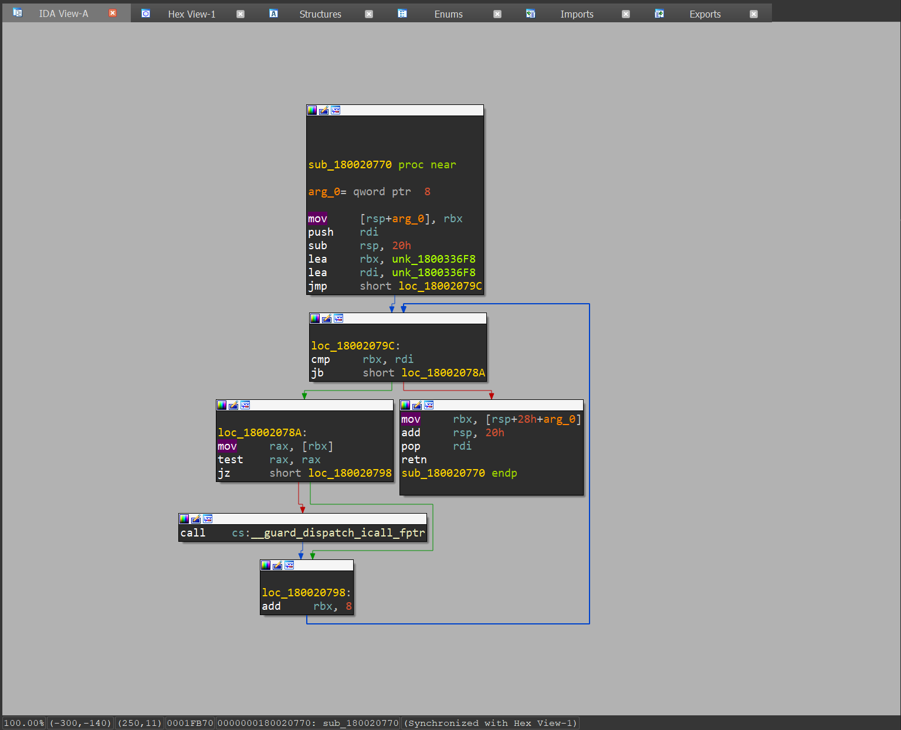

Assembly (inaczej język asemblera) to niskopoziomowy język programowania, który bezpośrednio odzwierciedla instrukcje procesora. Jest on jedną z najbliższych form programowania do sprzętu, umożliwiając programistom bezpośrednią kontrolę nad zasobami komputera, takimi jak rejestry, pamięć oraz inne elementy sprzętowe.
Język assembly pomaga w zrozumieniu kodu niskopoziomowego który jest wygenerowany przez kompilator a póżniej dekoodowany przez różne narzędzia
Przykłady dekompilacji kodu assembly w różnych narzędziach
IDA
BinaryNinja
X64Dbg